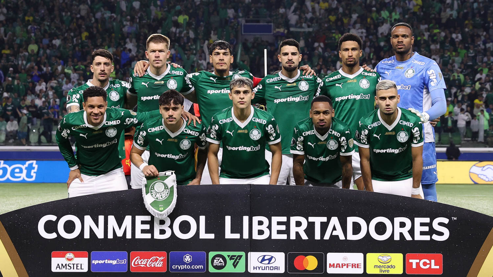

"Meu primeiro post
Por: Dandara Luiza
Boas-vindas ao meu novo blog, aqui vou compartilhar novidades do Palmeiras. Sociedade Esportiva Palmeiras foi fundado em 1914 como Palestra Italia e adotou o nome Palmeiras em 1942. É um dos clubes mais vitoriosos do Brasil, com títulos importantes como o Campeonato Brasileiro Série A e a Copa Libertadores da América. Atualmente, joga no Allianz Parque e é reconhecido por sua tradição, torcida e sucesso no futebol nacional e internacional..">